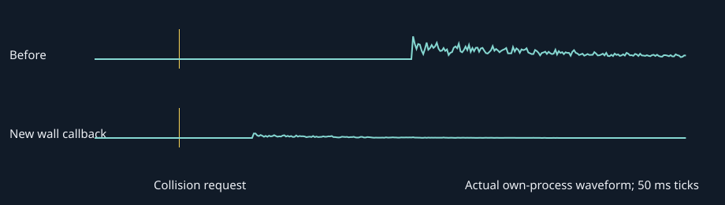

Actual Windows process output. Each recording begins 200 ms before its collision request. Hardware/Bluetooth acoustic latency is outside this capture.
Before (138 ms median)
New Game wall callback (44 ms median)
